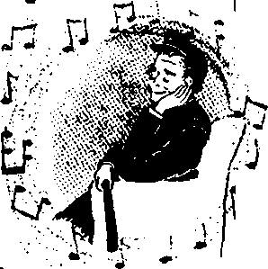

XW OME nine hundred citizens of Stamford, Connecticut, crowded into their Burdick School auditorium on the evening of March 13, 1957.
JULY 8, 1957 SEMIMONTHLY
News source# that are able to keep you awake to the vital issues of our times must be unfettered by censorship and selfish Interests. “Awake 1” has no fetters. It recognizes facts, faces facts, is free to publish facts. It Is not bound by political ambitions or obligations; It Is unhampered by advertisers whose toes must not be trodden on; It Is unprejudiced by traditional creeds. This Journal keeps Itself free that it may speak freely to you. But it does not abuse its freedom. It maintains integrity to truth.
"Awake I” uses the regular news channels, but is not dependent on them. Its own correspondents are on all continents, in scores of nations. From the four comers of the earth their uncensored, on-the-scenes reports come to you through these columns, This Journal’s viewpoint is not narrow, but is international. It is read in many nations, in many languages, by persons of all ages. Through its pages many fields of knowledge pass in review—government, commerce, religion, history, geography, science, social conditions, natural wonders—why, its coverage is as broad as the earth and as high as the heavens,
“Awake 1” pledges itself to righteous principles, to exposing hidden foes and subtle dangers, to championing freedom for all, to comforting mourners and strengthening those disheartened by the failures of a delinquent world, reflecting sure hope for the establishment of a righteous New World.
Get acquainted with “Awake!” Keep awake by reading “Awake!”
PUBLISHUn SEMIMONTHLY BY
WATCHTOWER BIBLE AND TRACT SOCIETY OF NEW YORK. INC.
117 Adams Street, Brooklyn 1, New York, U. S. A.
N. H. Know, President Grant Suites, Secretary
Printing this issue: 2,350,000 Five cents a copy
Other Isniaasee In which "Avala!" Ie pabthhea: SMilM«ath|y—Afrikuna, Finn Jah, French, German, Greek, HplUadlrt, IlAlUa, btarwegfeB, Spanish, Swedish.
—Dinletr, Japanese. Portisuesr, Ukrainian,
Yearly nutracriplto'i rales
GfflcBs far semimonthly editions
AHtfleA, U.S.. 1H Adams St., Brooklyn J, N.Y. |1 AMtnlH, 11 Beresford Rd., Straihteld, N.8.W. 8/-Gift Ma, 150 JJridgehnd Ave.. Toronto 10, Ont. |l En|la«i, 34 Craven Terrace, London W. 2 7/>
Nev JaiJjwd, (LP,a Boz 30. WtlHutftoa, C- I V-Sfrtft Afrfca, Frirste ffif, ffiajafefaztdn, TrJ. 7/-
Monthly slltltat cost half th* afem ratw,
Bem it lances should be sertt to ofllee In your country Id cuDhllance with rpcnlatlocu to fuarantee safe delivery of money. Bcmltlaneea an accepUd at Brooklyn from rorotrias where no effice la Ionita!, by international money order only. Subscription raiea in different counkies ate here slata! In local cuiTflQty. Watlca of exylratlen (with renewal blank) Is sent at leut t*o issues befteu subKripUoti expires. Chaaie af addrm when sent tn our afflee may be w pasta! effective wlLhln mo month- fiend your old id welt as new address-&Deraf ar fiecottf-efar matter at Bnnritfyfl. tf. r
Printed In V.fi.A.
CONTENTS
The Grand Canyon Between Man and Beast
The Fifth Amendment—A Guardian of Justice
Pigeons Grounded by Electronics
Precious Greek Manuscript Discovery 24 “Your Word Is Truth”
Jehovah's Witnesses Preach in All the Earth—British Guiana
XW OME nine hundred citizens of Stamford, Connecticut, crowded into their Burdick School auditorium on the evening of March 13, 1957.
T PRINCIPLE?
A battery of floodlights and microphones from a New York television network focused on the speakers on the platform as they proceeded with their debates, giving proof of the wide interest aroused. A tense atmosphere prevailed and applause was both loud and long as the opposing speakers made their points. Once there was also some booing. What was it all about?
As featured on the front as well as on several inside pages of the next day’s Stamford Advocate, the question debated was whether children attending parochial schools should receive free bus transportation or not The very same issue had arisen just a few days before in another New England city, Augusta, Maine. There opponents agreed to let the state’s supreme court decide the question. U. 8. News <£ World Report of March 22 gave a review of this problem in the United States, where one out of seven children attends a parochial school, under the heading: “Buses for Catholic Students—Who Should Pay for Them: Community or Parents?”
Sentiment played heavily in the arguments in favor of the community’s paying. Did not these parents .all pay taxes? Surely they were entitled to some consideration; besides, the amount was small, just the price of a package of cigarettes for each citizen. And had not the supreme court of the United States ruled that the state of Louisiana could provide textbooks for parochial schools and that free transportation may be given children attending parochial schools in New Jersey?
Also, it was argued that since the law allows parents to send their children to parochial schools they should not be discriminated against for taking advantage of this provision. To do so would be to make them second-class citizens. Certainly children attending parochial schools have the same rights regarding public safety and health measures as do children attending public schools. It is a case of applying the “lofty principles of brotherly love.” “We must ignore a child’s creed. We may not ignore a child’s need.”
However, those arguing against providing such free transportation stressed that it was not a matter of sentiment or religious discrimination but was one of principle. They showed that there is a difference in state constitutions. The fact that the supreme court or the United States had ruled in a certain way regarding certain states does not prove it would do so in every other instance. Incidentally, it does not even follow that the supreme court of the United States may not have been mistaken, and especially not in view of the fact that the supreme courts of at least seven states have ruled that it was unconstitutional to provide free bus rides to children attending parochial schools in their respective states.
It was also shown that a board of education can be concerned with only its own schools. It builds them, determines their policy and who shall attend them.' It can therefore logically provide transportation for those who must attend its schools. But can it provide free rides to competing parochial schools? By what authority? If so, to what extent, and who is to determine the nature of it? Will it also determine where these schools are to be built and what hours they are to be in session, so as not to burden the taxpayers needlessly?
Further, though the amount involved may be very small, still it is not the amount that is vital but it is the principle. If a thing is wrong it is wrong regardless of the amount involved. The immediate issue causing the birth of the United States was “No taxation without representation,” Which issue England tried to avoid by making the tax very small. But the issue remained. If the taxpayers of a certain religion do not want to take advantage of public schools that is their privilege. But does it give theip the right to ask others to help bear the expense of their own arrangements?
To illustrate: A group of adjoining property owners may wish to build a private road for their mutual use. The city may not prevent them from doing this, but, on the other hand, they cannot ask the city to keep this private road in a state of repair or provide police protection on it. Or, to use another illustration; If a group of citizens are dissatisfied with the municipal services provided by the city in the way of police or fire protection, they may decide to furnish their own. But may they ask the city to show them special consideration in the way of reduced taxes or to help them finance their own arrangements?
Finally, there is the matter of the entering wedge. If free rides are furnished to one parochial school they must be provided for all others. And if free rides, why not free health services? And then how long before taxpayers will be paying for the erection of parochial schools and for the instruction, religious and otherwise, given in them, all in violation of the Constitution of the United States, which provides for a wall of separation between church and state?
That such an eventuality is not at all unlikely can be seen from the many tax-supported parochial schools in other lands, such as Canada, France and Belgium. In fact, a Catholic booklet published in the United States on this subject, Federal Aid to Private Schools? argues that it does not make sense to allow Catholics to have their own private schools and then not give them their "fair share in commonly collected taxes.”
Truly this matter of free bus rides is not one of mere sentiment but is a matter involving principle.
GRAND CANYON
Evolution canna! account far the great gap between man and beast. That gap eloquently testifies to man's being a special creation.
a®;-
IN THE southwestern part of the United States is found the Grand Canyon. And grand indeed it is, with its length of 217 miles, its width of from four to eighteen miles and its depth of more than a mile in places. At its bottom flows the Colorado River. As one arrives at its brim and sees it fdr the first time, it truly presents one of the most breath-taking sights to be seen anywhere on earth. Obviously, to appreciate its vastness and grandeur one must have good eyesight.
There is a vast abyss between man and beast that may well be likened to the Grand Canyon. The Genesis account of creation takes due note of it: “And God proceeded to create the man in his image, in God’s image he created him; male and female he created them.” Man was made in God’s image in that he has the divine attributes of justice, love, wisdom and power. Additionally, man was given a threefold mandate to subdue the earth, to exercise dominion over the lower animals and to populate the earth. And to man alone was held out the prospect of everlasting life, provided he continued obedient. —Genesis 1:20-27, New World Trans.
Most eloquently testifying to the grand canyon between man and beast are man’s unique mental faculties. However, it is but reasonable to expect that man would also have unique physical characteristics in keeping with such unique mental faculties, and so we find it to be.
To begin with there is man’s unique condition at birth. He alone of the vertebrates, as Job observed, comes naked into the world and leaves it the same way. Man has no tough hide, no shaggy fur, no coat of wool or feathers to protect him from inclement weather or from bruises due to blows or falls. However, his having no natural covering has made it possible for man to inhabit all parts of the globe by adapting himself by means of clothing, which he is able to make by reason of his God-given intelligence.
Unique also is man’s upright position. As Goldenweiser so well shows in his book Anthropology, man alone is strictly bipedal. Some lower animals do walk on but two of their feet at times, but even for these, walking on all fours is more natural and comfortable. Thus the late Sherrington, one of the world’s leading physiologists, stressed man’s erect position as an important factor in man’s superiority and dominion over the lower animals. Evolutionists often portray the various anthro-
poid apes in upright positions alongside man as though such an upright position were as natural to them as to man. Such pictures are very deceptive, because only the bear can plant his feet squarely upon the ground the way man can, a characteristic known as “plantigrade.”
Another physical characteristic of man testifying to this grand canyon between him and beast is his unique hand. Only man has a perfectly opposable thumb; only his thumb can touch each of his four other fingers. Thus Dr. A. Carrel, in his book Man the Unknown, says: “We would never ' have acquired our mastery over matter without the aid of our fingers, those five small levers.” And says another authority: “Whatever men have done that distinguishes them from the brutes has been done by their brain. But the hand has been the instrument of the brain in bringing about nearly all of these successes.” And according to still another, man’s brain has two important instruments that distinguish man from the beasts, speech and the hands.
The most striking physical characteristic of man, testifying to his being a special creation, is the size of his brain, about three pounds, or two percent of our body’s weight. At birth it weighs but twelve ounces, the same as that*of a full-grown chimpanzee. It was because evolutionists wanted to bridge the grand canyon between man and beast as regards man’s brain size that they became such easy victims of the Piltdown hoax. Thus the American Scientist, April, 1954, stated that the Piltdown remains “realized largely the anticipations of students of human evolution.”
Darwin had foolishly argued that “the extreme development of [man’s] brain ought not to outweigh a multitude of resemblances in other less important or quite unimportant points”! Just how foolish Darwin was can be seen from what Loren C. Eiseley, one of the world's leading anthropologists, has to say: “The Darwinians ... were unconsciously minimizing the abyss which yawned between man and ape. In their anxiety to demonstrate our lowly origins they were throwing modem natives into the gap as representing living ‘missing links' in the chain of human ascent. ... We have been so busy tracing the tangible aspects of evolution in the forms of animals that our heads, the little globes which hold the midnight sky and the shining invisible universes of thought, have been taken about as much for granted as the growth of a yellow pumpkin in the fall.” “Today Piltdown [man] is gone. In its place we are confronted by the blunt statement of two modem scientists. ‘No adequate explanation,’ they confess . . . , ‘has been put forward to account for so large a cerebrum as that found in man.’ . . . The true secret of Piltdown, though thought by the public to be merely the revelation of an unscrupulous forgery, lies in the fact that it has forced science to reexamine the history of the most miraculous creation in the world—the human brain.” (Harper’s magazine, November, 1955) Truly man’s brain size eloquently testifies in behalf of the Bible’s account of the special creation of man by showing how wide is the abyss between man and beast!
Reason and Artistic Sense
Testifying even more conclusively the grand canyon between man and beast^ are man’s unique mental faculties. Well has man been described as “the animal that thinks.” Among the proofs that he is a thinking creature is his gift of speech.* Thus Dr. S. S. Tomkins of Princeton University, in Science News Letter, July 3,
1954, showed that man’s ability to talk is due to his superior nervous system,
Evolutionist Hooten recognized this fact, for in his book Up from the Ape he states: ■‘All of the anthropoid apes are vocally and muscularly equipped so that they could have an articulate language If they nos-sessed the requisite intelligence. ... There is nothing about a snout that prevents its possessor from speaking, but there is something abo>ii the brain that goes with a snout that makes speech impossible.” He then goes on to describe the futile efforts of manv scientists to make apes talk.
Man also demonstrates his unique thinking ability_bv inventing tools. As a noted geologist, the. late Frederick White, once pointed out: “No animal has ever been known to fashion a tool; whereas there is no tribe of men so low in intelligence that it does not fashion the most curious and complicated tools.” Bearing on this point is the comment appearing in Life magazine, November 7, 1955, to the effect that “the Australian primitive has the same huge brain-body ratio, protracted infancy, erect carriage and gift of language you do.”
Another witness to man’s uniqueness is his artistic sense Man alone appreciates beauty; to mm alone it is important; he alone needs to create in satisfy a longing in his .soul, The anOient cave men of southern France drew amazing likenesses of animals on the walls of their caves, as the Encyclopedia Americana shows in its treatise on “Christian Anthropology.” These cave men also beautifullvjirnamented their tools. Man is not only the only tool-making animal bufalso the only creature on earth with an artistic sense. It finds expression in his clothes, in his places of abode, in whatever he makes. Not content with mere speech, he must also have poetry, drama and music. No question about it, music, poetry, painting, sculpture, architecture and other forms of creative activity further highlight the gulf between man and beast,
Jfan Alone Is Free
All lower animals are more or less bound by instinct. Only man is free to choose his environment. Only man has great capacity for organization. Those who point to insect communities as examples of perfect organization sadly err. Thus Albro T. Gaul, in his book The Wonderful World of Insects, shows that ‘insect societies do not repre-1 sent a triumph of governmental organization, a communistic set-up for mutual aid. Actually they represent no government at all. The parts of an insect society act nice the parts of a living body. Their function is biological rather than social or political.’
“Men alone,” says Professor M. J. Adler of the University of Chicago, “are rational and free, and so differ essentially from all other animals. . . . men do certain things that no other animals do at all in any degree. . . . Man alone is a_ political animal Other animals are social or gregarious, but all of their social organizations and activities are instinctively determined, as is evidenced by their uniformity within specific groups. But human society, in the family or the state, is constituted by man’s choice among ways of living together;, onlv human society is constitutional or political.”
The noted Russian scientist Pavlov Proceeded on the theory that man is just another animal. Still he, "altoL-seventv rear' of intensive research, was unanm_.tQ.in' tegraie. completely the lower nervous ac tivity of the conditioned reflex to the higher nervous activity oi human behavior.' In other words, he found that he could not make man respond automatically to certain stimuli the way he could make dogs responu. x es, man is different, as the Communists found in their efforts to brainwash their victims. God gave man the capacity for exercising choice, for being free.
Moral and Religious Faculties
Even as that physical characteristic of man most eloquently testifying to the grand canyon between man and beast is his brain size, so likewise man’s moral sense and his relieious instinct are the menial faculties that, above all else, witness to man’s being unique, a special creation separate and distinct from the brutes.
Lower animals do not have a moral ■sense. They have no conscience, they develop no guilt complexes. They do not need to confess faults or sins in prayer, or to another to get relief. They need no moral task; but man without one is lost. Thus Dr, Viktor Frankl of Vienna, one of the world’s leading psychologists, points out that man. for his own mental and emotional health, “must have a moral task. He must see his life as meaningful.”
This fact is further highlighted in the report of modem students of old age that for old folks to keep well and happy they must keep busy, and not just at a hobby, but at something worthwhile, something that satisfies their moral nature; they must feel that they are being of some use to others. What lower animal worries about whether the work it is doing is useful to others or not? What animal reouires a ■moral task tn he content?
Then there is man’s need to worship. No lower animal is capable of worshiping God. It cannot think of God, it cannot imagine his existence. On the other hand, there is no tribe or group of people, no matter how low on the scale of civilization, that does not have the urge to worship.
That difference between man and beast is highlighted in the position taken by the new school of psychology int Vienna namei iy, that "we all feel an urge for God as powerful as our instincts for sex and hun ger." also psychologist i . Jung says the cniei cause for neurosis after the age of thirty-five is a failure to recognize one’s need of religion. Could we imagine the lower animals becoming mentally disturbed because of lack of religion? .
In view of all this evidence—to which much more could have been added had space permitted—in favor of the Bible’s account of the special creation of man in God’s image and likeness, what folly to question its inspiration on the basis of the shallow theories and erroneous speculations of menl What blind conceit to refei disparagingly, as so many do, to the “poetry of Genesis,” and to prefer the opinions of men, which are mere guesses'
The Christian Greek Scriptures show that Jesus Christ accepted the Genesis account of creation, and he was the greatest teacher that ever lived. His apostles and disciples also accepted it. Since this most criticized part of the Bible is thus seen to have successfully met the challenge of critics, search further and you will find all of it based on fact. Study it and learn why God has permitted evil, where we are on the stream of man’s history, and of the wonderful hope of everlasting life in his new world of righteousness that God sets before all men of good will.
BRITAIN AT LOWEST SPIRITUAL EBB
Never before has Britain's materia] welfare been higher, writes Dr. Eustancc Chester, a psychiatrist, in a British medical association periodical. Yet at the same time, says the psychiatrist, never before has Britain’s spiritual life been so desolate as it is now. “Nervousness, anxiety, lack of faith, together with a frantic search to escape from ourselves," he wrote, “has gained a painful grip on us.”
a tortuous course of examination, to betray them into confessions which proved fatal to their lives and fortunes. To this mental torture was soon after added the use of bodily tortures, together with the concealment of the names of witnesses. . . . When the prisoner refused to acknowle'dge his fault at the first interrogatory, he was remanded to prison; after many months he was again brought forth, and asked to swear before a crucifix that he would tell the truth. If now. he did not confess, he was immediately considered guilty, otherwise he was plied with leading
THE prisoner stood before his inquisitors and felt the complete frustration of hearing himself judged guilty of crimes he did not commit. His confession was false. It had been extracted under pain of unspeakable tortures and long imprisonment. He had been forced to provide evidence against himself. It was self-incrimination. Now death upon a flaming stake awaited him.
This commonplace scene of the thirteenth century should be a warning to freedom-loving people of this twentieth century, for very little protects them from a modern repetition of it. They should consider seriously what history says about inquisitional “justice.” Note what the Cyclopedia of Biblical, Theological, and Ecclesiastical Literature tells us:
“Inflamed with a passion for extirpating heresy, and persuading themselves that the end sanctified the means, they not only acted upon, but formally laid down, as a rule for their conduct, maxims founded on the grossest deceit and artifice, according to which they sought in every way to ensnare their victims, and by means of false statements, delusory promises, and questions until thoroughly bewildered.” What stands between this perverted form of justice and free peoples today? Just one small thing—the right against self-incrimination. For the American people this right is embodied in the Fifth Amendment to the Federal Constitution. It is found in the short phrase: “nor shall be compelled in any criminal case to be a witness against himself.” This phrase is the only provision in the Constitution that protects people in the United States from being subjected to torture for the purpose of extracting confessions.
In Communist countries, where no such provision exists, an accused person finds himself confronted with thirteenth-century justice. Physical and mental torture have long been employed in Soviet Russia to force accused persons to testify against themselves. In the speech Nikita S. Khrushchev gave to the Twentieth Party Congress in Moscow on February 25,1956, he admitted the use of such inquisitional methods. Since these methods exist today, freedom-loving people are faced with a danger that cannot be viewed as belonging only to the thirteenth century.
Protection Against Self-Incrimination
The Fifth Amendment stands as a guardian for the American people, shielding them from the injustice of inquisitional procedures. It protects them from being prosecuted for thoughts and opinions. The framers of the Constitution knew the great need for such a guardian. They were well aware of the injustices that can develop when it does not exist. They were familiar with England’s notorious Star Chamber and the ecclesiastical Court of High Commission that were set up by the Tudor and Stuart sovereigns.
These tribunals tried people without formal indictment or jury. Mere suspicion was all they needed to have a person dragged before them. The accused was then deluged with roving questions to find evidence that would convict him. It was also hoped that this would uncover crimes unknown to the investigating tribunal, especially crimes of thinking, speaking and worshiping in a manner displeasing to it. If the accused refused to answer incriminating questions he was considered guilty. He was then subjected to long imprisonment and oftentimes torture to force a confession.
It was with the desire to prevent such injustice that early supporters of the Fifth Amendment insisted upon a constitutional guarantee against self-incrimination. The privilege was first included in the Virginia Bill of Rights of 1776. Then in 1791 it was incorporated into the Federal Constitution.
Regarding this guardian of justice, Chief Justice Warren said in 1955: “The privilege against self-incrimination is a right that was hard-earned by our forefathers. . . . As early as 1650, remembrance of the horror of Star Chamber proceedings a decade before had firmly established the privilege in the common law of England.... To apply the privilege narrowly or begrudgingly—to treat it as an historical relic, at most merely to be tolerated—is to ignore its development and purpose.”
For Protection of Innocent
It must be kept in mind that the privilege against self-incrimination was placed in the Constitution to protect the innocent. This fact is underscored by the great legal authority Dean Wigmore: “The system of ‘inquisition,’ properly so called, signifies an examination on suspicion, without prior presentment, indictment or other formal accusation; and the contest for 100 years centered solely on the abuse of such a system. ... No doubt a guilty person may justly be called upon at any time, for guilt deserves no immunity. But it is the innocent that need protection. Under any system which permits John Doe to be forced to answer on the mere suspicion of an officer of the law, or on public rumor, or on secret betrayal, two abuses have always prevailed and inevitably will prevail: First, the petty judicial officer becomes a local tyrant and misuses his discretion for political or mercenary or malicious ends; secondly, a blackmail is practiced by those unscrupulous members of the community who through threats of inspiring a prosecution are able to prey upon the fears of the weak or the timid.”
The Fifth Amendment, with its provision against self-incrimination, shields Americans from such abuses.
Generally Misunderstood
In recent years public misunderstanding of the Fifth Amendment has been created by some persons who have been brought before congressional investigating committees. Unsavory characters of the underworld and active Communists have misused the privilege to hide their unlawful activities. But such misuse of the privilege does not mean it should be revoked for seemingly being an impediment in the process of uncovering and prosecuting criminals. That would be a serious mistake. The famous law authority Blackstone once said that it would be better to permit 99 guilty men to escape than to convict one innocent man.
Rather than require an accused person to provide incriminating evidence against himself the judiciary must use accepted police methods to ferret out the necessary evidence. Even though this puts police agencies to a great deal of trouble and expense it is necessary for the protection of innocent people. Consider what the book The Blessings of Liberty, by Zechariah Chafee, Jr., says on this point: "Consequently, it is very important that a government should, even at the sacrifice of some efficiency, perform its tasks by methods which do not shock the consciences of naturally law-abiding citizens. Regard for that principle brought about many constitutional rights.”
The existence of the Fifth Amendment removes any temptation law-enforcing agencies might have to shortcut criminal proceedings by resorting to forced confessions. It would take much less effort to compel a person to confess than to dig up evidence. This was pointed out by a British official in India in reply to an inquiry as to why native policemen occasionally applied torture to prisoners. According to Chafee, this official said: “There is a great deal of laziness in it. It is far pleasanter to sit in the shade rubbing red pepper into a poor devil’s eyes than to go about in the sun hunting up evidence.”
Because forced confessions violate the Fifth Amendment as well as prove wholly undependable, American courts refuse to accept them. If there is the faintest indication that a confession has been coerced it will be rejected. Note what the 82d Congress said on the subjeat: "Neither does the Amendment preclude the admission in evidence against an accused of a confession made while in the custody of officers, if the confession was made freely, voluntarily, and without compulsion or inducement of any sort.” On the same point Thomas Cooley, in his book A Treatise on the Constitutional Limitations, said: "A confession alone ought not to be sufficient evidence of the corpus delicti. There should be other proof that a crime has actually been committed; and the confession should only be allowed for the purpose of connecting the defendant with the offense.”
Should Not Be Disrespected
In view of the vital place the Fifth Amendment holds as a guardian of justice it seems strange that a person would speak disparagingly of it. Yet there are people who do.
Respect is not created by using a term such as “Fifth Amendment Communists.” This has caused concern among persons who know how vital the Fifth Amendment is in protecting freedom of thought and freedom of speech. Harry P. Cain of the Subversive Activities Control Board expressed this concern when he said: “Those who use ‘Fifth Amendment’ as an adjective of disapprobation modifying the noun ‘Communist’ are as guilty of disrespect for the Constitution as any Communist could be. Centuries of inquisitional tortures, mental and physical, and misgivings over man’s inhumanity to man forged and tempered the bulwark of freedom that the individual shall not be required to convict himself. We should be less concerned by the few who hide behind the privilege without justification and much more concerned by those who trifle with and prostitute its significance."
Use of Fifth Does Not Signify Guilt
Our modern judicial system is built upon the belief that a man is innocent until proved guilty. Until evidence is produced that establishes his guilt he must be considered innocent even though he invokes the Fifth Amendment.
In spite of common opinion to the contrary, there are reasons why an innocent
person would use it. The doctrine of waiver could be one reason. According to it the person who gives information that might be considered incriminating waives the privilege of not answering thereafter. If he wants to prevent automatic waiver of the privilege he must claim it at the earliest possible moment during the investigation. Knowledge of this fact could cause an innocent person to invoke the Fifth Amendment to ensure his access to it if it should be needed. It would therefore be wrong to infer that he is guilty.
Another person might honestly feel that he would violate his conscience by divulging names of friends who were once associated with communism but who are now no longer sympathetic toward it. Such a man may be free from any taint of communism himself, yet he invokes the privilege for the sake of his conscience. Of course, the privilege cannot legally be used to protect friends, but, nevertheless, this would explain why some innocent persons would feel moved to use it.
But whatever the reason may be, employers and acquaintances should not penalize a person who makes use of this
Constitutional privilege. To illustrate how wrong public opinion has become in its view of the matter, consider the case of a judge who was denied a special appointment by state officials because he had, while a lawyer, defended a client who used the Fifth Amendment. This action aroused indignation in the president of the New York State Bar Association. “The Supreme Court,” he said, “has often held that the Constitution guarantees to every accused the right to counsel. That right will have no meaning if lawyers have to fear public obloquy and disqualification for office when their clients invoke their constitutional rights.”
Another protest came from the president of the Association of the Bar of the City of New York: “As long as the Fifth Amendment remains part of the Constitution, individuals have the right to avail themselves of it”
What happened to the unfortunate victims of thirteenth-century inquisitors should be a warning to those who speak slightingly of the Fifth Amendment. They need its protection. It is a vital guardian of justice and freedom.
NO GUILT IN PLEADING FIFTH
C In May the United States supreme court handed down a unanimous decision decrying the popular tendency to assume a man guilty if he invokes the Fifth Amendment, This was in sharp disagreement with President Eisenhower’s view that those who use it must be trying to hide something. The court’s opinion, written by Justice Harlan, quoted this statement by Erwin N. Griswold, dean of Harvard Law School: “Too many, even those who should be better advised, view this privilege as a shelter for wrongdoers. They too readily assume that those who invoke it are either guilty of crime or commit perjury in claiming the privilege.” A concurring opinion x written by Justice Black and' joined in by Chief Justice Warren and Justices Douglas and Brennan went further, saying: “I can think of no special circumstances that would justify use of a Constitutional privilege to discredit or convict a person who asserts it. The value of these Constitutional privileges is'largely destroyed if persons can be penalized for relying on them. It seems peculiarly incongruous and indefensible for courts which exist to act only under the Constitution to draw inferences of lack of honesty from invocation of a privilege deemed worthy of enshrinement in the Constitution.”
■ V ■■
N June 2S, 1956,
President Eisen
tftW ‘IV,-
hower set in motion the biggest public works program in the history of the world when he signed his signature to the Federal-Aid Highway Act of 1956.
The main feature of this program is a 41,000-mile network of limited-access roads linking ninety percent of all cities with populations of more than 50,000 in the United States. It will also serve the country’s principal industrial and defense areas. .
A record $33,480,000,000 has been set aside for this gigantic road-building program. But authorities are confident that by the time this project is completed in 1972, as scheduled, it will have cost United States taxpayers well over $50 billion.
In case you are wondering what that $50 billion could buy in the form of other public work programs, just combine the Panama Canal, Grand Coulee Dam and the St Lawrence seaway into one tremendous construction project. The $50 billion that Americans are marked to spend in the next fifteen years for major highways under the new legislation could finance twenty-nine such projects!
The new law is proof that the American people want and are willing to pay for better highways. But the question is, Will either the $33,-^480,000,000 or $50-billion sum guarantee lor -them a decent highway system? The facts show that it will not, unless legislators rouse themselves from their deep slumber and act now and quickly,
At present, laws regulate the minimum width of traffic lanes, set legal speed limits, specify grades, slow curves, all-weather shoulders, dividing strips and other engineering and construction standards. But modem highway planning calls for more than the control of the highways. It calls for roadside control as well.
Without rigid roadside controls, scenic beauty and roadside development are left up to the discretion of selfish commercial-minded men, who care nothing about the countryside or the safety of the driver. Their sole interest is to exploit the motoring audience and they cane little about how they do it.
New York Park Commissioner Robert Moses said the express arteries under the new highway system are entirely exposed to signs and billboards. “The entrances,-exits, and intersections/* he says, ‘‘are all left exposed to an indiscriminate mushroom growth of ugly filling stations, hotdog stands, and all the other familiar roadside eyesores. Consequently, we face the prospect of speedways built in gasoline gullies, obliterating scenery and confined between continuous rows of offensive advertising.”
Senate investigators studying this problem expressed fear that the new system of interstate roads might become lined by a
forest of distasteful billboards and advertising signs. Under the new federal highway law the government has no authority to control advertisements along the new system of interstate and defense highways, although it is putting up ninety percent of the funds.
Fight Against Controls
To get the United States Congress to enact a law that will protect the roadside from becoming defaced is no simple matter. The moment an effective control bill appears on the scene roadside commercial-ists, outdoor advertising lobbies, swing into action and, with their army of lawyers, representatives and stooges, do everything within their power to defeat it.
Billboard companies have shrewdly sought the aid of farmers and other landowners to fight their battles. Even labor unions, charities and good causes have been used by ingenious roadside promoters to defeat regulation bills or to water them down to the point of being meaningless. The last session of Congress, for example, rejected a proposal that would have authorized the acquisition of rights up to 500 feet from the highways to prevent billboard construction. Why Congress rejected this law the people were never told.
Often the billboard industry will offer a compromise in an effort to side-step rigged legislation. They promise to co-operate with public officials in charge of highways by limiting the number of billboards along a highway. They claim that co-operation will accomplish more than legislation. But their claim, says Park Commissioner Moses, is false. “The record conclusively establishes that in practice self-policing is a farce.”
Like their business enterprises, their billboards and signs get bigger and bigger and more and more. Some companies argue that their signs are an improvement on nature, that the traveler needs them to keep awake. Safety organizations, however, tell a story to the contrary. They declare emphatically that billboards and neon signs definitely detract from traffic signals and important road signs, that sign slogans and pictures take the eye and mind off the serious business of driving.
Public Distaste and Law Enforcement
There is no question about the public’s distaste for advertising signs along the highways, especially for those signs that project in front of beautiful trees or cut off expansive country views. A survey by the American Automobile Association Showed ninety percent of those interviewed favored restriction of such invasion of the countryside. Sinclair Weeks, United States secretary of commerce, acknowledged before a senate public works subcommittee that there was widespread feeling throughout the United States that advertising near the interstate system should be curtailed to preserve the “beauty and pleasing character of the natural landscape and in the interest of highway safety.”
Stressing the need for effective measures in this matter of roadside controls is an editorial in the Pennsylvania, Farmer. In part it says: “When the Pennsylvania Turnpike was first contemplated, and as work progressed, announcement was repeatedly made that this road would be free from billboards and other commercial signs and notices. It was to remain in its natural setting for the benefit and satisfaction of the traveling public. For a few years the promises were kept Then one hotel put up a big sign. Then a competing hotel put one up. Then other establishments followed as one sheep follows another through a hole in a fence.”
Little wonder, then, why the New Jersey Turnpike Commission has consistently and steadfastly refused to sanction billboards.
To allow one billboard to go up is to open a hole through which ten thqusand more will follow. New York state has also been able, through strict law enforcement, to protect the beauty of its parkways, expressways, its many boulevards and thoroughfares against this kind of intrusion.
Several states have passed effective regulatory laws concerning advertising encroachments, and the tendency is increasing not only to abolish all advertising within the right of way but to extend the jurisdiction of public highway authorities to the regulation of offending advertising on private property joining the highway. The supreme judicial court for the county of Suffolk, Massachusetts, in effect sustained the power of state officials to regulate and restrict advertising on private property within public view. The courts have also recognized that the billboard is an intrusion that distracts the traveler and endangers his safety.
Billboard and advertising companies have long argued that the courts would not recognize beauty as a factor to be considered within the limits of the law. But they got a real jolt when the supreme court of the United States in a unanimous decision sustained the District of Columbia Redevelopment Act of 1945. The court held that “the concept of the public welfare is broad and inclusive. The values it represents are spiritual as well as physical, aesthetic as well as monetary. It is within the power of the legislature to determine that the community should be beautiful as well as healthy, spacious as well as clean, well-balanced as well as carefully patrolled.”
What Must Be Done Now?
While the primary purpose in building the new expressways is to accommodate traffic, yet this depends upon the attention given to the roadside as well as to the highway. No expressway can serve to its full capacity if traffic flow is slowed down by a succession of billboards and by driveways to an unbroken procession of motels, by lunch stands, filling stations and drivein theaters. To prevent such cheapening of the multibillion-dollar expressways that the nation is going to build in the next fifteen years, strong legislation is urgent now to protect not only the highways but the roadsides as well.
Since it is the untainted charm of the countryside that is predominantly responsible for making the highways and parkways so universally appreciated, then every consideration should be given to trees, shrubs, ground covers and turf that produce the parkway atmosphere. The restful shade from overhanging trees reduces pavement glare and driver-fatigue. Fields of wild flowers and greens, together with graceful curves of the winding road, contribute an exhilarating beauty to any highway. Whether these are artificial or natural, the effect on the motorist is pleasing and restful.
Keep the parkways and the highways both safe and beautiful.
MORE HOLIDAYS
<£ An impartial observation appearing in the New York Daily News says: "Let's not be hypocritical about making Good Friday into a national holiday, as one Voicer urged. Instead, let's be honest about our holidays. Let’s have a holiday tor official worship of each of the real gods of the average American—the god of luck, the god of speed, the gods of gaudiness, bigness, space ships, stylism, fads, braggadocio, racketeers, lawsuitism, deficit spending, matriarch!sin, hero worship, ball games, glamor, cocktails, jazz and sex.”
tricity—but the fox also has an odd choice of friends. His constant companion is a hunting dog!
According to a National Safety Council report, Richard Fleming of Woodland, California, had good reason to lose his head while driving. A woodpecker
was peeking away at it! The bird, a family pet, was jn the lap of Fleming's son when it mistook the eider Fleming cranium for a tree and went to work with an earnestness typical of woodpeckers. The car left the highway and rolled over twice. Neither of the Flemings was hurt. The woodpecker found itself a tree.
Motherly Hen Raises Killens
A motherly hen has caused a disturbance on a farm near St. Paul, Minnesota. It seems that one of the fanner’s hens laid some eggs under a trough in the barn. The farmer’s cat later chose the same spot to give birth to her kittens. Then the cat went for a walk. When she got back the hen had decided the kittens needed a mother and was squatting protectively over them. She refused to allow the mother cat to touch them. Each time the cat wanted to feed the kittens the farmer's wife had to secure the hen; otherwise the hen launched a fierce attack. The kittens? Strange to say, they kept neutral. Whichever mother happened to be around won their support.
Feline Acromania
For some unknown reason a cat in Simpson, Pennsylvania, climbed to the top of a sixty-foot power pole. There the cat sat on its lofty perch day after day. After nine days of feline high-mindedness, the cat returned to earth, eluding would-be rescuers and disappearing.
Just a Foxy Fox?
' A man in Lake Orion, Michigan, has a fox that must think he is something else. Anyway, the fox starts the day off with bacon and eggs, One could probably overlook this little eccen-
Borine Eeconnaiasance
At Swansea, Wales, a cow clumped sixty feet up a winding stairway to the top of the airfield control tower. Bossie stood there gazing contentedly over the countryside. For sixteen hours she surveyed the countryside while authorities pondered the problem of getting her down. “We had a cow up there before," said a member of the Swansea Flying Club, “That time," he explained, “I helped push her down the stairway. But this time we’re not going to risk that because there is a danger of being crushed against the wall if the cow gets angry." The problem remained unsolved until a seven-i ecn-year-old farm boy came along. He merely milked the cow and uttered a few soothing “sooo-bossies,” After that she clumped back down the stairs.
Eccentric Ecstasies
..■i> In the mountain country of southern New Zealand there are no fabric-top convertibles— at least not for long. This is all because of a bird character called kea. This green parrot with red feathers beneath its wings loves to poke fun at motorists and holes in the fabric lops. Within a few nights parrots will rip a canvas to shreds. Fa brie-covered cars send them into some kind of eccentric ecstasy. These parrots have another eccentricity: they like to land on a corrugated iron roof of a mountain hut. For hours on end they will slide down in an ungainly fashion, shrieking with delight. These clownish parrots to know when to stop. Not a lew of them that have presumed too far have ended in the pot.
seem never

an
MINISTERS
If ANY I ' t Christian ministers today are women. It was prophesied to be so by the prophet Joel. In Acts apostle of Jesus Christ tells us of the beginning of the fulfillment of this prophecy among the first Christians to walk this earth: “I shall pour some of my spirit out upon every kind of flesh, and your sons and your daughters will prophesy . . , even upon iny men slaves and upon my women slaves I will pour out some of my spirit in those days, and they will prophesy.” (Acts 2:17, 18, New World Trans.) Philip the missionary “had four daughters, virgins, that prophesied.” Phoebe, a Christian sister of the apostle Paul, is also mentioned as “a minister of the congregation which is in Cenchreae.” (Acts 21:9; Romans 16:1, New World Trans.) The present-day congregation of Christians is no different in this way. A great many of those who are actively declaring the good news of Christ’s established kingdom are women.
Jesus gave the world as a field for Christian ministry, No limitations were laid
the responsibility of leadership in Christ’s congregation. With the exception of this one restriction the field is the entire
upon men. But one is placed upon women fulfilling their obligations to follow Christ’s example—that of teaching or instructing Christian men. This would prohibit women from usurping authority in an organization run by theocratic laws, which ordained Christian men with world, and we see women busy in the field, making an important announcement, “a new government is ruling, a mighty King is now reigning.”
You Represent Christ
If Christ Jesus were here in person and asked you, a woman, to keep a personal appointment with another person in his stead, would you not feel a great privilege had been extended to you to fill his request? Of course you would. You would be eager to fulfill it with all the serious contemplation of one appointed to the honor of ambassadorship. Now, then, finding ourselves in this position of unequaled importance, let us dwell awhile on the indubitable consequence of successful public appearance.
In recent years men in charge of world governments have sent women as their representatives and ambassadors of state to other countries. These women have received much publicity in their office. In most cases they have also received acclaim because of the successful fulfillment of their missions. Former ambassador to Italy, Clare Boothe Luce; former ambassador to the United States and former president pro tempore of the United Nations General
Assembly, Madame Vijayalaksmi Pandit of
India; and Madame Chiang Kai-shek, ambassador of good will to the United States, just to mention a few whose names you have noticed in the news.
These women are Known ror rneir dignified conduct. In fact, their success in office depended on representing their countries in such a way as not to call unfavorable attention to themselves, for such would reflect upon the government they represented. These women represent governments in a world passing away. Christian women stand for a government and a world that will never end but will stand forever. Still, because of the similarity in holding an office of ministry of high rank, minister of God’s new world, and in that analogy only, we may learn something by a few notes of comparison.
Remember, you are a woman. And remember how much a first impression means to you. You often speak to women at the door. They are every bit as serotinous as you are, perhaps more so. Before you ever speak a word, your appearance says volumes. So let us consider for a moment that very important first of our lady minister of the New World.
Standard of Dress
One rule that has almost no exceptions might be stated in this way; Dress as you would to keep an important business or social appointment. No matter in what part of the world we perform our ministry there is a set standard of ‘dress that would acceptably fit this rule. This standard differs around the world. We can be guided, therefore, by what is best in the community in which we live. Not to extremes in fashion, for this would do no more than call attention to ourselves. We should dress, rather, to create the favorable impression that would dignify the purpose of our visit.
Let us start at the top of our. costume. In countries where the three-cornered scarf tied under the chin, a “babushka,” is best taste, wear this. But in cosmopolitan cities, suburbs of such cities or smaller towns where this is not the accepted uesi, let us not use it. Oh, yes, it is easy and quick to throw a scarf around the head, maybe even hide pin curls underneath, and later bring out the hat when “I’m dressed up more.” But does this really dignify the ministry we are engaged in? In most places a hat, not a big, flappy, frivolous creation, but a hat, is accepted as preferred. Somehow it says a lady is calling. Anyone throws on a scarf to cross the back yard to borrow a cup of sugar. In some parts of a country no hat or head covering at all is necessary to be very presentable.
But keep in mind, our lady minister is calling as a representative of a new government, for a really important purpose. Let us look it! True, it is important to be presentable at meetings. But if so, then how much more important it is to present ourselves at our best in our first-call or returncall ministry. To be sure, a cold day demands that the ears be covered. It can be done by a close-fitting hood, or some such equivalent that looks far more chic and, in fact, does the job much better.
It is true that we are subject to public opinion. Ours is a public ministry. And our clothes are an important part of our public appearance; they even disclose a personality, some say. Our presentation at the doors, then, reasonably, would not call for frilly ruffles dotted with rhinestones or a neckline so low that it suggests anything but the ministry. If we think it would, perhaps we ought to make over our personality when selecting clothes for the field service. ‘Dressing down’ is always preferred to dressing up too much.
In fact, if you notice, there is always a certain simple classic style, a basic type of fashion that stays in vogue year after year. So it is good common sense to be alert to it. Simplicity has always been accepted as the criterion in fashion circles; is, in fact, the demand of good taste. No one has to be.a tasrnon plate, or run right out for a new wardrobe. But put things together with some forethought for the position you occupy. Remember you are representing the New World government in public service! You know, a repeat performance of a nice-looking outfit is no drawback—our audience changes at every door.
Dressing fpr Meetings
Something can be said for the matter of meetings as well. Usually we like to dress up at this time. But do not forget, there are the small meetings to think of in the same way, our area Bible studies. We might think, ‘Well, this is an informal meeting and I know everyone who will be there. So here, at least, I can let my hair down. Slacks will do, or anything comfortable.’ But it is not a ‘come a^ you are’ party. The public is invited to all our meetings. And persons will judge again by our appearance and conduct before they become mature in the truth.
Actually, we dedicate our lives to be representatives of Christ Jesus to the world. So everywhere, and at all times, our conduct, our demeanor, our dress and appearance are being watched by those measuring the truth by us. Let us give the best we can to speak in these silent ways. So with “handling the word of truth aright’’ you can “do your utmost to present yourself approved to God, a workman with nothing to be ashamed of.”—2 Timothy 2:15, Yew World Trans.
No, we do not want to try to ape this world of changing fashions and its aims for personal attention. It has turned its head toward the ‘stars’ they put in the public eye, pin-up or sweater girls. Still, we must be conscious of the fact that we are very much in the public eye. Our ministry puts us there. And since we are a theatrical spectacle in this world let us recommend the good news we bear in our very best manner and dress. Sometimes we may say some like to go to church to show off their finery. No doubt this has its truth. But if an effort to look one’s best is found to be so among those who worship false gods of this world, how much more, indeed, should those who represent the Most High God have a dignified appearance and bearing, though with no effort at display.
Another very important part of the lady minister’s appearance is her countenance. “A glad heart makes a cheerful countenance.” (Proverbs 15:13, Rev. Stan. Ver.) Since our mental attitude is showing, see that it shows something pleasant to look upon. Show you are glad to be doing the work you are in. If the toast burned this morning or something else upsetting happened at home, well, shoulder chips are best left at home. There is nothing so warm and friendly as a sincere smile; it is a pleas-, ure to receive one. It almost always gets the same response. So when the door opens be ready to show, in a genuinely friendly way, you are glad to be there to give them something for tfieir welfare.
Feminine Abilities
Women have many natural abilities that can serve them well in the pursuance of their ministry. One of these is the ease with which they can meet and converse with people. This often comes with less effort to women than to men. However, a woman’s penchant for talking is in itself never sufficient. Her talking must be to put across ideas. Words without thoughts are needles without points. It requires advance thinking on and studying of a subject in order to have our words full of meaning and few in number. A great deal can be said in a few words. Reading the proverbs you can see how much thought can be expressed by a minimum of words. A proverb is a mouthful of choicest meat well seasoned. Not that there is any ban on words, but make them count. Let yourwords drive the truth home. More and more the people we meet ted us they are too busy to listen. So our thoughts must be expressed in a pithy, condensed way. Then when time is allowed we can use it well to expand our subject.
Women make good diplomats. Of course, their ability is usually employed more in keeping good relations between people, rather than between governments. However, it is a case of being able to control a situation. The ability to be able to say the right thing at the right time, tactfulness, is a quality that may require cultivation. It is certainly worth the patience and effort to acquire it, however. And all of this fits under the heading of being “transformed by making your mind over.'*—Romans 12:2, New World Trans.
When a need arises women often show uieir qualities of inventiveness or ingenuity to a great advantage. And in the field of our public ministry this property is a useful one. After a short while we get to know the usual situations and objections we must meet. Be alert to turn an unfavorable situation into a favorable one. One is not always successful at first—but there is a great field for trying. The advantage is to the listener, whose hearing ear may gain his life.
And now let us look at ourselves scruti-nizingly in the mirror before leaving home to engage in our ministerial assignment. Does our reflection say we are calling for a serious and important purpose ? Does our face show we are glad to be there to give good news? Are we anxious to speak with confidence on subjects with which we are conversant? If so, then we see our lady minister fulfilling her high calling in an acceptable and pleasing manner, before God and men. Paul and Timothy said long ago: ‘We are therefore ambassadors substituting for Christ, as though God were making entreaty through us. As substitutes for Christ we beg: ‘Become reconciled to God.’ ”—2 Corinthians 5:20, New World Trans.
Rapid advan ronjcs appear to have grounded the pigeons—at least
the message-carrying pigeons used by the United States Army. The Army recently announced that it was selling 1,000 birds, the last of its homing pigeons.
The news saddened many a nature lover. One old-time Pentagon official tartly asked: “Is this a consequence of the Wilson memorandum curtailing the Army's responsibility in long-range aircraft?" But the Army was determined. Electronics had come of age; the pigeons had to go. Still there was some good news for bird lovers. Eighteen of the pigeons, instead of going on public sale, went to zoos and other institutions because they had saved many lives.
One of the feathered heroes, called GI Joe, was awarded the Dickens Medal by the Lord Mayor of London in 1946. During Allied fighting in Italy m World War II this winged courier flew twenty miles in twenty minutes. GI Joe carried an urgent order to cancel the scheduled bombing of Colvi Vecchia, since hundreds of British troops had entered the town ahead of schedule. Another feathered hero, named Caesar, flew 300 miles across the Mediterranean to deliver an important message to his home loft in Tunisia. Always-reliable Caesar carried 44 combat messages in the North African campaign. Now the Army, which used 56,000 birds during World War II, has deactivated its feathered messengers and reassigned their trainers.
a POLICEMAN called on a householder to register a complaint that neighbors had made about his playing his phonograph too loud. The policeman was invited in and asked to listen to just how loud the music lover did play his phonograph. A symphony orchestra recording was played with full sound. It was so beautiful and ef- . f'ective that the officer agreed that such playing was not too * loud and assured the music lov
er he could continue playing his music that way. The charms of “hi-fi” had soothed the stern officer’s breast.
What is “hi-fi”? It is an abbreviation of “high fidelity.” According to one authority, “high fidelity has to do with quality in sound reproduction. The word ‘fidelity’—meaning 'faithfulness’—permits us to understand that in high fidelity the objective is to reproduce sound so that it is indistinguishable from the original sound.”
of
High fidelity achieves its goal of realistic reproduction of the original sound by means of its full frequency range, by its being practically free from distortion and by its virtual elimination all sounds not in the original rendition.
The old-style phonograph usually was limited to a frequency range of 150 to 6,000 vibrations or cycles per second, known as “cps.” The human ear can hear as few as sixteen and as many as 20,000 cps. The range of the average person, however, is from twenty-five to 15,000 cps, which range decreases with advancing years.
There are no voices or instruments that of themselves have such high fundamental frequencies; the highest note ; on the piano has only some 4,000 ; cps. But each note has overtones or harmonics that set in motion vibrations two, three and four l» k. times as high as those of the ”T fundamental note. Thus the ipfourth harmonic of the highest note on the piano has over 20,-£ 000 cps. These overtones, in addition to strengthening a tone, ? also give it its peculiar quality or timbre. High fidelity therefore does justice to the various tonal ffiJF shadings of the instruments'in an JJf orchestra, clearly presenting the differences between the various strings, woodwinds, brasses and percussion instruments. An analogy might be made with the difference between color photography and black and white.
Appreciation of high fidelity begins with one’s becoming aware of sound, and may be said to be a training
1 ■
of the ears of music lovers to appreciate quality. As a result, there is enjoyment of a new world of so und, a world of great variety, exquisite beauty and thrilling power. In fact,
its ability to reproduce music of tremendous power without distortion is one of high fidelity’s most striking features; incidentally, also accounting for much of its high cost High fidelity imparts the quality of “presence” to music, bringing the orchestra right into one’s home, as it were.
Once a music lover becomes accustomed to high fidelity reproduction a comparison with the old-style phonograph will readily reveal to him how much he had been missing. It is therefore easy to understand why literally millions, both in Europe and in the United States and elsewhere, have so takbn to what one American conductor termed “the most important contribution to music within recent time.”
Record Player and Tuner
The three basic units in modem music reproduction are the sound source (record player, tape recorder or tuner), the amplifier and the speakers. For high fidelity the record player must have an electric motor running perfectly true and a sturdy turntable, accurately machined. The stylus (needle) should be diamond-pointed, as it not only lasts by far the longest but also causes the least wear on the records. The “cartridge” or head for the stylus, which changes the vibrations of the stylus to electrical impulses in accordance with the frequency and intensity of the vibrations, must also be carefully chosen. For right pressure on the record the tone arm must be properly balanced. Of course, the turntable must be capable of handling the various speeds generally used, 33^, 45 and 78 revolutions per minute, called rpm. The 78-rpm record needs its own stylus because of its larger groove. How finely adjusted and perfectly balanced the mechanism of the record player should be can be seen from the fact that a stylus vibrates as rapidly as 15,000 times a second.
To be able to receive radio programs on one’s hi-fi set a receiving set or “tuner” is also needed. In addition to the factors of size and quality, usually determined by one's ability to pay, hi-fi reception means FM broadcasting and reception, as contrasted with AM. Why?
In brief, AM or “amplitude modulation” is generally limited to from fifty to 7,500 cps. Secondly, AM receiving sets or tuners invariably cause distortion. And third, AM broadcasting is affected by many outside factors, weather, electrical equipment, etc., which cause crackling noises known as static.
On the other hand, FM, standing for “frequency modulation,” is able to transmit sound frequencies from twenty to 20,000 cps and therefore very definitely is hi-fi. It can be picked up with practically no distortion and is virtually free from any static interference.
Audio Amplifier and Speakers
As we have noted, the vibrations on the record are picked up by a stylus and changed to electrical impulses by the head or cartridge, which holds the stylus in the tone arm. For these electrical impulses to be strong enough to vibrate the speakers so that the sound can be heard they must be amplified; for this reason an audio amplifier unit is needed. In most radio sets the receiver and amplifier are built together on one chassis. And if the preferable magnetic head or cartridge is used, a pre-amplifier is also required, which both boosts the signal and alters it to compensate for changes made during the recording.
The amplifier consists of a number of vacuum tubes and electrical circuits. It should have a large reserve of power so that it can do justice to peaks of sound, as in the climax of musical selections. The greater this reserve the more faithfully the high frequencies are reproduced also. A good amplifier will increase the power uniformly throughout the entire range of frequencies and do so without bringing in any distortion or extraneous sounds.
The speakers constitute the final link in high fidelity. Since, by the very nature of things, a speaker cannot do justice to both the very high and very low frequencies, hi-fi requires two or more speakers. One convenient arrangement is the coaxial speaker, consisting of a small cone for the high frequencies in the center of a large cone for the medium and low frequencies.
A more elaborate solution is the employing of three separate speakers: the largest for the lowest frequencies from twenty to 600 cps; a medium-sized speaker for those from about 600 to 4,000, and then a small speaker for those from 4,000 to, 20,000. These, however, must be connected by a “crossover” system that sorts out the frequencies for the respective speakers. The smallest speakers, for the highest frequencies, are known as “tweeters,” whereas the largest speakers, for the lowest tones, are known as “woofers.”
For these speakers to function properly they must be attached to a “baffle” and housed in a right kind of enclosure. A baffle board is necessary because a speaker vibrates both in front and in back, and these vibrations tend to cancel out each other unless separated. For best results the speaker should be part of a large box or enclosure, solidly built and made of the right acoustical materials.
The size, shape and location of the enclosure of the speakers would depend somewhat on the size of the room, its shape and acoustical properties. The simplest solution is to build an enclosure that fits in a comer. This allows the greatest possible enjoyment by all, regardless of where they may be seated.
The final step is the interconnecting of the various parts. Wire should be properly covered and of the right size. While the various components or parts should not be piled on top of one another, neither should they be widely separated, as long connecting wires lose some of the hi-fi quality.
High fidelity principles have been employed for some time in the entertainment field, but only recently have they become available for the average home. As for the cost of high fidelity, this would largely depend upon the individual. In the United States one should count on a minimum of $150, a maximum of some $1,000, while the average appears to be about $350. Some, unable to pay the full price at once or who want to experiment, purchase their sets piecemeal. If judiciously done this can eventually realize the same goal.
High fidelity is continually improving, even as interest in it keeps on growing. Among the latest innovations or improvements are the electrostatic speaker, primarily for the high frequencies and based on an entirely different principle from that employed by the ordinary cone speakers, and stereophonic and binaural sound. The latter require two of everything; two distinct pickups of sound in the first place, two separate broadcasts of these pickups, two receivers or tuners, two amplifiers and two separate and distinct speaker units set some feet apart. Technically, binaural requires headphones so that each ear hears only one of the two reproductions; but generally the term binaural is used interchangeably with stereophonic. Of course, in a theater stereophonic is not limited to just two speakers. Stereophonic reproduction has the maximum of possibilities for realistic effects.
Its every-increasing popularity among the entire range of music lovers truly testifies that hi-fi music does indeed have charms. It makes for richer, fuller, more enjoyable living. Of course, like all good things it can be taken to an excess; one can become a glutton or drunkard musical* ly, even as one can as regards food and drink. Those who are wise, however, will enjoy it in moderation, even as they do all other material good things in life, appreciating that these are not the really important things. At the same time they will feel gratitude in their hearts to the One who makes such beautiful music possible in the first place, Jehovah God, from whom comes “every good gift and every perfect present.”—James 1:17, New World Trans.
prttious Greek Manoscrlpt Discovery
^uAST December a new Greek manuscript discovery was announced. Some authori-Ml ties hailed it as the most important Greek manuscript find since the Chester Beatty papyrus of 1931. The new discovery contains about fourteen chapters of John’s Gospel, whereas the 1931 discovery contains portions of only two chapters of John. Known as Papyrus Bodmer II, the new find is of inestimable value: it is the oldest considerable portion of the book of John known to be in existence.
The new discovery is not a scroll or a single sheet rolled up; it is a papyrus codex. Hence it is essentially in the form of a modem book. It consists of 106 pages that contain the Greek text of John 1:1 to 6:11 and 6:35 to 14:15. There is no information as to who found the codex or exactly where, although it is believed to have been found in Egypt. Today the precious papyrus codex is in the possession of a noted Genevan bibliophile, M. Martin Bodmer, and is in the Bodmer World Library in Geneva. It was recently published in a volume called "Papyrus Bodmer II.”
What is the age of Papyrus Bodmer II? Last December at least one newspaper said the discovery dated back to A.D. 150. However, it does not appear to be quite that oid. The editor of the codex, Victor Martin, professor of classical philology at the University of Geneva and president of the International Association of Papyrologists, has studied the handwriting. He compared the script style with the script of dated Greek documents; he concludes that the Bodmer Codex is “not later than the reign of Diocletian [284*3051; but it might well belong to the very beginning of the third century, or even earlier.” Hence a date of about A.D. 200 has been suggested. So the Bodmer Codex may have been made about a hundred years after John penned his Gospel.
How does the age of the Bodmer Codex compare with the Chester Beatty fragments? Sir Frederic Kenyon dated the Chester Beatty papyrus at about A.D. 240, but the Bodmer Codex may . be a generation oldter than that. Even if we accept a date of A.D. 200 for the new discovery, still it is not the oldest manuscript of John’s book. The oldest known to be in existence is a fragment of a papyrus codex that contains John 18:31-33, 37, 38. This tiny papyrus scrap is now in the John Rylands Library at Manchester, England. It cafne from a papyrus codex written in the first half of the second century, between A.D. 100 and 150.
The Bodmer papyrus, according to Professor Martin, most closely resembles the Sinait-1c manuscript, which dates from about the middle of the fourth century. But the age difference! The Bodmer Codex is about 150 years older than the Codex Sinaiticus. Until the Bodmer Codex came to light the Sinaitfc and the Vatican No. 1209 MSS. had been considered the most important texts on John.
The main differences in the new manuscript are in regard to word order and spelling. Interestingly, the Bodmer Codex does not contain die story of the woman taken in adultery at John 7:53 to 8:11. The pinaitic manuscript omits this also. (It Erst appears iii Codex Bezae, which dates back only to the sixth century.) At John 13:5 the Bodmer Codex uses a picturesque word; it says that Jesus put water into, not a mere nipt&ra or "basin” but rather a podoniptgra or "foot basin.”
Papyrus Bodmer II bears eloquent testimony to the soundness and reliability of the generally accepted text of John’s Gospel.
JESUS Christ himself spoke of the restoration of the garden of Eden and he said that an evildoer would be there. When was this? It was when he was hanging upon the torture stake at Calvary. An evildoer impaled alongside Christ sai<V “Jesus, remember me when you get into your kingdom.” "And he said to him: 'Truly I tell you today, You will be with me in Paradise.’ ”—Luke 23:39-43, New World Trans.
Religionists are forced to admit here that “paradise” could not mean the heaven of God’s presence, because to Mary Magdalene on his resurrection morning Jesus said: “Stop clinging to me. For I have not yet ascended to the Father.” Jesus had not yet gone to heaven. Accordingly, the paradise Jesus mentioned on the tree could not be heaven.—John 20:17, New World Trans.
Also, Jesus told the Jewish ruler Nicodemus: “Most truly I say to you, Unless anyone is born again, he cannot see the kingdom of God.” "Most truly I say to you, Unless anyone is born from water and spirit, he cannot enter into the kingdom of God." The evildoer was not born again of water and of the holy spirit there on the tree, nor baptized. So it would be impossible for him to enter heaven on the day he died. Jesus himself did not ascend to heaven until some forty days after his resurrection. It is unthinkable that an evildoer should precede Christ into heaven! —John 3:3, 5; Colossians 1:18, New World Trans.
What, then, did Jesus mean by paradise? The footnote on Luke 23:43 in the Catholic Confraternity translation says: "Paradise: that is, the abode of the just souls under the old dispensation, who were waiting in limbo for the coming of the Messias to lead them to heaven." The National Catholic Almanac defines limbo as "the place where the souls of the just were detained until the ascent of Christ into heaven; a place of rest arid natural happiness in which unbaptized infants and others who die in original, but not actual sin, are detained.”
According to the Catholic view Abraham, Isaac, Jacob and all the other prophets before Christ were there in “limbo.” But the word “limbo” does not once occur In the Bible. It was introduced into I'eh-gious theology in the thirteerith century. The teaching is absolutely contrary to the inspired Bible, and neither Jesus nor the friendly evildoer went to such a place the day he died.
At death, where, then, did Jesus with the evildoer go? Peter said that Jesus was confined in Hades: "Neither was he [Christ] forsaken in Hades nor did his flesh see corruption. This Jesus God resurrected.” Scripturally, then, Jesus, together with the malefactor, must have gone to Hades, or hell, on the day he died.—Acts 2:25-32, New World Trans.
Not willing to say that Abraham and al) the other faithful ones before Christ are in hell torments, religionists claim that paradise is a section of hell and that Abraham and others are in that paradise and at the same time in hell. In that way, if Jesus and the evildoer were in Hades or hell, they could at the same time be in paradise.
The religious clergy get into difficulty with Jesus’ words to the evildoer because they believe the human soul is immortal and that hell is a place for torturing the conscious immortal souls or numans. me clergy could easily be helped out of their difficulty if they would accept the Bible teaching that "man came to be a living soul”; that the soul is mortal, “the soul that sinneth, it shall die”; that hell or Hades means the “unseen place” and applies to the common grave of mankind; that there is no conscious life in the Bible hell. All who are there are dead, unconscious, inactive. “For the living know that they shall die: but the dead know not any thing." Paradise was never transferred to an underground hell, except in the minds of the religious clergy by their wresting of the Holy Scriptures.—Genesis 2:7, New World Trans.; Ezekiel 18:4; Ecclesiastes 9:5,10.
Jesus and the friendly evildoer did not go to paradise on the day they died. They both went to hell and there they were lifeless, unconscious, dead. The evildoer is still there, but on the third day Jesus was resurrected from hell. Peter did not say respecting the dead Jesus: ‘You will hot forsake my soul in paradise’; rather, “You will not forsake my soul in Hades.”—Acts 2:27, New World Trans.
Jesus did not tell the evildoer that he would be with Jesus *that day in paradise. The misreading of the Greek text and consequently the improper punctuation of Jesus’ words by the translators have made Jesus appear to say they would be there. “And Jesus said to him: Amen I say to thee: This day thou shalt be with me in paradise.” (Luke 23:43, Bouay) A correct rendering of Jesus’ words is as follows: “Truly I tell you today, You will be with me in Paradise.” (New World Trans.) This correctly shows that Jesus did not say he and the evildoer would be in paradise that same day. Rather, on that dark, tragic day Jesus confidently declared to the malefactor: “You will be with me in Paradise.”
This is the first and only time that Jesus on earth is reported as mentioning paradise. Why? Because paradise was the only hope that Jesus could set before this criminal who had never followed in Jesus’ footsteps or learned the mysteries of the kingdom of heaven. Jesus set before the dying evildoer an earthly hope. The malefactor knew nothing of a heavenly kingdom, so he was not asking Jesus to take him to heaven.
From the prophecies the evildoer could know that Messiah’s kingdom would restore paradise to earth and that by a resurrection of the dead those in hell would be enabled to enter into this restored paradise. Jesus knew what was in the malefactor’s mind; so he said to him: “You will be with me in Paradise.”
This assured the malefactor that he would have a resurrection from the dead when Jesus had re-established paradise on earth. This meant that the evildoer would come back from death to life on the paradise earth under Jesus’ heavenly kingdom.
Paradise will be restored to earth after the battle of Armageddon and during the thousand-year rule from heaven. The earthly paradise will remain for all time. It will be a park of pleasure to which the dead in the general resurrection of mankind will be raised. It will be a glorious feature of the new earth under the protection and blessing of the heavenly kingdom of Christ the King.
But the meek shall inherit the land, and shall delight themselves in the abundance of peace.—Psalm ,37:11, Am. Stan. Ver.
READERS of Awake! recently read of village life among some of the aboriginal Indians of the hinterland of this South American British colony. The way of life in such places is very primitive and many are unable to read. But the.article failed to limit its comments about these Indians to them, and it seemed to readers that these comments were being made about all Guianese. This was not intended and Awake! regrets very much the erroneous impression its article left. Even among some of these Indian tribes much has been done in the way of education, and they are able to understand the Kingdom message. However, the Amerindians represent but a small fraction of the population. Actually the half a million people of this colony are spread over an area as large as England and Scotland together, and conditions in one place differ very much from those in another.
Since the seventeenth century, when sugar and rice began to be cultivated for export, immigrants came from Africa, India, Portugal, China and Europe, and have eventually spread out along the two hundred miles pf coastland, where their descendants are still to be found in these same industries, united by a common language—English. This fact is a great asset when one is engaged in the ministry, for almost everyone has some knowledge of the Bible and has little inhibition about discussing it. Jehovah’s witnesses in going from house to house almost always receive a friendly reception whether the homes be large or small or whether the occupants be Hindu, Moslem, Catholic or Protestant. No matter what their religion they will say: “But we all worship the same God.”
Along the coastlands, where most people live, the majority like to read and when, at the conclusion of a sermon, Bible helps are offered the minister is told, “Oh, we have the Watch Tower books already, ” and their bookshelves prove this to be so. Especially is this true of the Watchtower and Awake! magazines, which .'seem to be read by almost everyone. One Lutheran minister said: “I take The Watchtower because it gives me real Bible facts for my sermons?’ Schoolteachers use material from Awake! in school, while business and professional men place a high value upon it generally.
Full-time ministers assigned .for periods to villages in the interior concentrate on starting group Bible studies, using first the booklet “This Good News of the Kingdom”. In a number of instances over 50 percent of the population have become subscribers for The Watchtower and Awake! When one is revisiting these groups in such sparsely populated places, many questions must be answered in connection with their reading. Eventually some of these begin to preach, so that now there are over thirty such groups and congregations that together reported 600 active ministers in April, sixty of whom are full-time publishers. The work of serving isolated parts is further aided by others of Jehovah’s witnesses taking a month during the year from their normal occupation to go and minister there.
All of these congregations are grouped in three circuits, with each circuit convening at a weekend assembly every six months. Each time a different congregation plays host to the remainder of the circuit, and so many witnesses share in house-to-house preaching that often homes are visited twice in the one week, but, since each minister has a variety of short sermons to use, no one minds.
Sleeping accommodation is no great problem to hospitable Guinanese, for Hindu, Moslem or Christian alike will gladly open their homes free of charge.
Local residents at the assembly village are most helpful. They admire the zeal and enthusiasm so manifest at such assemblies. As one man whp hauled a diesel lighting plant from the city so we could have electricity for showing the film said: “No, I won’t charge you anything. When I see you all working together like this I want to do my bit too. Is there anythin? else I can do to assist?”
The Congregational Church next door to our assembly hall announced that because of the heavy schedule of the Sunday program the church services would be adjusted so as not to clash with the special meeting next door. The Society’s film was scheduled and interest was so great that those in authority decided to show it twice, and both times the hall was packed to capacity with over five hundred each time.
For the past three years the Society’s films have been shown at these village assemblies and at cinemas, mills, hospitals, prisons, in homes and in forests on the average of one show a week. Facilities are usually donated, and attendances usually range from 300 to 1,000. On one occasion two missionaries returning from isolated parts on an overnight steamer were invited to show the film to about a hundred passengers aboard. Interesting scenes drew round after round of applause.
“Guiana” means “land of many waters.” That this name is fitting can be noted from the observation made in 1603 by Dutch settlers: “A province of high mountains, great wildernesses, forests and very deep and mighty rivers.” But now the living waters of God’s Word, the Bible, provide the greatest contributing factor in bringing real unity to those of its six races who dedicate themselves to the worship of one God—Jehovah.
j • Why it is principle, not sentiment, that is f involved in the issue over free bus transpor-r tation for parochial schools? P. 4, 1T2.
j • What outstandingly testifies to the gap be. tween man and beasts! P. 5,
/ • How artistic sense separates man from
animals? P. 7, f3.
f • What stands between free peoples and po-> lice torture! P. 9, fl4.
. • Why some courts reject forced confes-
/ sions! P. 11, f 3.
t • What threatens America’s new highway r system? P. 13, f8.
j • What makes highways universally appre-. ciated? P. 15, fl4.
KNOW? .
• Where- a cow climbed a sixty-foot tower?
P. 16, 1J5.
• Why many Christian ministers today are women? P. 17, fl.
• What feminine ability serves well in the ministry? P. 19, f5.
• What the term "high fidelity” means?
P. 21, f2.
• Why a recently found Greek manuscript has excited scholars? P. 24, fl.
* That Jesus did not go to paradise the day he died? P. 26, f 1.
• Where schoolteachers use "Awake!” magazine in school! P. 27, f3.
/ I /
) / ) ) )
Britain Joins 11-Bomb Powers # First there was one, then there were two, and now there are three H-bomb powers. Britain became the world’s third hydrogen-bomb power when she set off (5/15) her first nuclear explosion in a series of tests being conducted on Christmas Island. Reactions to the eocplosion were mixed. Some deplored the thought that Britain should have exploded a mushroom fireball. Britain’s Prime Minister Harold Macmillan said (5/16) that the H-bomb explosion had given Britain a “very much better bargaining position" in world disarmament talks. In Japan students protested in front of the British embassy and tangled with the police. The British H-bomb was launched from a Vickers Valiant jet bomber that has a range that permits a round-trip flight from London to Moscow. The bomb explosion was equal to over a million tons of TNT. It took three years to develop and it cost the British people some 5200 million.
“Profoundest Regrets”
Taipei, the Chinese Nationalist capital on the island of Taiwan, was saved (5/24) from a bloodbath in the nick of time. A U.S. soldier, M/Sgt. Robert R. Reynolds, shot and killed a Chinese clerk who, he says, was peeping at his wife in her shower. Reynolds was tried and acquitted by a U.S. court-martial. The verdict was extremely unpopular. The widow of the slain Chinese, Mme. Liu Chi-jen, arrived at the U.S. fembassy with a three-cornered placard calling Reynolds' a killer and declared the acquittal unjust. A crowd gathered. Someone threw a stone at the embassy. Others followed suit. Each hit was cheered. The mob of some 3,000 scaled the wall, tore down the embassy door, .stormed through the building smashing furniture and typewriters, hurling documents and wrecking windows. The U.S. flag was torn to shreds amid frenzied applause. Crowds from 20,000 to 30,000 persons began to swarm throughout the city as (he rioting spread. Martial law was announced. President Chiang Kai-shek rushed 33,-000 Chinese troops into Taipei. Strict military rule was enforced. The city began to calm down. More than a dozen cars wete smashed and thirteen Americans were beaten or manhandled. The U.S. State Department issued a stiff protest calling, for an adequate explanation'and apology. U.S. senators called the rioting “shocking” and "very regrettable.” Ambassador Tong hurried to the U.S. State Department and offered his government’s “profoundest regrets.”
Chiang Kai-shek also expressed "profound, regrets” (5/26) to President Eisenhower over the incident. The rioting symbolized "“no deep anti-American sentiment,” said Tong. They just did not like American justice.
Beck Gets Ousted
Dave Beck, president of the International Brotherhood of Teamsters, the most powerful union in the U.S., also a member of the AFL-CIO council since August, 1953, saw the beginning of the end to his labor union career when the executive council of the AFL-CIO ousted him as one of its vice-presidents. Beck was charged with “gross misuse of union funds entrusted to his care” as president of the International Brotherhood of Teamsters. The council’s unanimous verdict (5/20) was “guilty as charged.” Beck later announced that he would not run for re-election as president of the teamster’s union.
Caution on Disarmament
The disarmament talks in London began to take on a serious note. For the first time in years the Russians were talking sense. The question now was, Did they mean it? Were they sincere? A supreme effort must be made to reach a disarmament agreement with the Soviet Union, said President Eisenhower. The more any intelligent man studies the implication of modem warfare, “the more he should understand you have got to work on this business of disarmament.” Admiral Arthur W. Radford, chairman of the Joint Chiefs of Staff, viewed the matter rather pessimistically. “We cannot trust the Russians; on this or anything,” he said. “The Communists have broken their word with every country with which they ever had an agreement.” Harold E. StassAi, Eisenhower’s special disarmament adviser, said he would deal “carefully and cautiously" with the Russians In "small, measured steps."
Churches Face Segregation Law
Both houses of the South African Parliament have adopted a new segregation law. The law, as passed, empowers the Minister of Native Affairs to bar nonwhites from worshiping with the whites if he thinks their presence undesirable. Religious authorities have protested that the law conflicts with religious freedom and is contrary to their principles. Archbishop Geoffrey Clayton, leader of the Anglican Church in South Africa, warned that he would "be unable to obey" the new law or counsel his clergy or people to do so. He said he knew what the consequences were for not obeying, "but we are commanded to render unto ’ Caesar the things which be Caesar’s and to God the things that are God’s,” said the archbishop. The Christian Council of South Africa, representing 23 churches and missionary societies, has also spoken out against the new segregation legislation. Protest meetings have been held across the country. Women have demonstrated against the legislation. Not far from the parliament buildings a notice appears on the steps of the Saint George’s Anglican cathedral, which says: "This cathedral Is open to all men and women of all races to all services at all times.” Now South Africans are wondering whether religious leaders will remain united in their convictions.
Britain Ends Gas Rationing
It was good news, especially to the automobile trade, the oil companies and the tourist agencies, when the British government called (5/14) an end to gasoline rationing. Gasoline rationing began December 17, 1956, when the Suez Canal became engulfed in war. Rationing ended with the British decision to use the Suez Canal under Egypt’s terms, France alone is conducting a boycott of the canal on grounds the press describes as those of moral principles. But business experts believe that the official French position is too quixotic to last.
"Spirit of St. Louis IT’
•$> On May 21,1927, Charles A. Lindbergh enthused the whole world by flying his fragile single-engine plane, the "Spirit of St. Louis,” nonstop from New York to Paris In 33 hours 29 i minutes. Crowds of thou, sands greeted and cheered him everywhere he went Commemorating the thirtieth anniversary of the nonstop flight, U.S. Air Force Maj. Robinson Risner, 32, flew an F-100F Super Sabre on a slightly longer route from McGuire Air Force base, New Jersey, over the Azores to Le Bourget airport in one fifth of the time, In 6 hours 38 minutes. There were no crowds, tears or cheers for Risner. The Spirit of St. Louis II landed almost completely without fanfare. "It was a swell flight,” said the major. “There really isn’t any comparison between [Lindbergh’s] flight and mine.” The major was so right. There is no substitute for being first. Unlike the Lindbergh plane, the jet had to refuel twice in the air while making the 3,680-mile trip. The Lindbergh plane carried 450 gallons of fuel. Risner’s jet burned up 450 gallons of fuel about every forty minutes. The Lindbergh plane cost about $25,000; the U.S. air force plane, about $640,000. Lindbergh lived on sandwiches and landed in Paris exhausted. Risner had nothing to eat, because the “trip was so short.” Instead of being tired and wanting to go to bed, he told reporters: "I'm not tired. I want to see Paris first.”
Men Against Malaria
The ancient scourge of malaria is under a world-wide, long-range attack. The objective is the eradication of malaria over much of the world in five to ten years. The Malaria Eradication Committee of the International Development Advisory Board reported that speed was essential because some mosquito carriers of malaria were developing resistance to DDT sprays. The report said: "Of the more than fifty species that transmit malaria, seven show such resistance In some parts of their range. DDT resistance has appeared after six or seven years of continuous exposure and dieldrin resistance has now appeared in one case after only eighteen months’ exposure. . . . Time is of the essence.” Prevalence of malaria has dropped 80 percent after two years of spraying in the Philippines. In Taiwan one out of four persons used to suffer from malaria; now the rate is one In 200.
Postpone Launching
Man-made Moon
The satellite launching program has run into trouble. The first man-made moon, a sphere weighing some twenty pounds, was to have been launched sometime this September. But because of a whole new crop of problems the launching date will be delayed at least for another year. The purpose of the satellite, which will be set in its orbit some 300 miles above the earth, will be to relay by radio to earth certain scientific data, such as the measurements of ultraviolet radiation from the sun, of the earth's magnetic field, of cosmic ray intensity and of the total radiation to and from the earth. The Soviet Union is also working on a similar program, but they are stone silent regarding their progress. It has been pointed out that they have already been widely credited with having sent some 50 rockets to altitudes of about 800 miles. This gives the West some indication of their competence in the space-rocket field.
Love Wins Over Religion and Law
$> Mr. and Mrs. Melvin B. Ellis adopted Hildy, who was born of an unwed Roman Catholic mother. Hildy was only 10 days old at the time. A Massachusetts law requires that adoptions be kept within religious faiths where possible. For four years Massachusetts tried to take the child and put her In a Catholic foundling home for adoption within* the Catholic faith. The Ellises left Massachusetts meanwhile and took refuge in Florida. They were charged with kidnaping Hildy. Fiori-da's Governor Leroy Collins called the charge "synthetic.” He said: "The real issue is simply whether or not the custody of Hildy McCoy should continue with the Ellises or be placed under institutional control and direction.” The governor gave his decision: "The great and good God of all of us, regardless of faith, grants to every child to be born first the right to be wanted and secondly the right to be loved. ... Hlld/a mother denied both of those rights to her. ... It was the Ellises In truth and in fact who have been the persons through whom God has assured to Hildy these first two rights as one of His children.” Six-year-old Hildy can stay with her Jewish foster parents, the Ellises, who love her.
Boy Cheats Death
® Behind his modest house in Manorville, Long Island, Benjamin K. Hooper, Sr., had just finished digging a 24-foot well in the sandy soil. Before leaving for the house he warned his 7-year-old son, Bennie, to stay away from the hole. But Bennie wanted to see if he could jump across. He almost made it. “Bennie fell in the hole I” cried Bennie’s playmate. The father rushed to the well and tried in vain to rescue his son wedged at the bottom of the 12-inch hole. Emergency calls went out More than 200 workmen responded. Ropes and hooks were used, but unsuccessfully, Oxygen was pumped down to Bennie to keep him from suffocating. A parallel shaft was dug. Caveins hampered rescue operations as precious seconds ticked away. Sam Woodson, a rescue worker who came over because he had a feeling that he could help, tunneled over to where Bennie was wedged. As he dug away with his hands he saw the jacket covering Bennie's head. Was it possible for the bby to be alive after being entombed for almost twenty-four hours? Woodson said: “I started to brush the sand away from his coat, when I heard him whimper.” "He’s alive!” he shouted up. Above ground there were tears and applause. Bennie had only a bruise on the arm to show for his harrowing experience.
Healing of the Nations Has Drawn Near ... a heart-warming discourse that will cheer people of every nation. Will you hear its comforting message?
Attend one of the 1957 DISTRICT ASSEMBLIES OF JEHOVAH’S WITNESSES
held in the British Isles, Canada, Hawaii and the United States July 3-7 at Houston, Texas; Miami, Florida; Toronto, Ontario
July at Penver, Colorado; Moncton, New Brunswick; Seattle, Washington July 17-21 at Milwaukee, Wisconsin; Southampton, Hants., England; Southend, Essex, England
July 24-28 at Derby, England; Edinburgh, Scotland; Edmonton, Alberta; Los Angeles, California
July 2B-29 at Hilo, Hawaii
July 31 - August 4 at Bolton, Lancaster, England
August 21-25 at Baltimore, Maryland
These conventions are planned for lovers of truth and righteousness. AU over the world are men of gaod heart who long for peace and pray for God's will ta be done in earth. Thousands of such persons will be absorbing the good news at each assembly.
WHICH ONE WILL YOU ATTEND?
You May Survive Armageddon into God’s New World
T" HAT is the reassuring message of the stirring 384-t page book bearing that, title. From its opening chapter, “Proclaiming the Good News,’’ to its last, “Individual Decision Now for Surviving Armageddon,” you will be gripped with the overwhelming proof that the greatest catastrophe of all time impends and that the way of escape is at hand! Forty-two types and prophecies of the earthly heirs of the new world add documentary evidence from the Bible.
witness of two men is true,” said Jesus. (John 8:17, ■1 N"ew World Trans.) Yet all forty-two of the Bible’s prophetic pictures of those who will survive the “end of the world” are clearly drawn and explained in this important publication. If you make your position secure now, you may live through God’s final war and rejoice forever in the righteous conditions that will prevail on earth through the New World society. Obtain this valuable book. Read it with your Bible. Fit yourself and your family for the trying times ahead. Send only 50c.
[iiii-|iii[ir.|i|ir.i;i:iimnmm;in.mmihimmiimMail Coupon Todaylturm......mmimiiim.........iiimiii
WATCHTO W BR
117 A D A M £ 5 T.
BROOKLYN 1, N. Y.
I am enclosing 50c for the Bible-study aid Fou Jfa-jr Survive Armageddon into God’s New World.
Name ...............................................
Street and Number or Route and Box
City.................................................... Zone No......... State
In: AUSTRALIA address 11 Beresford Rd., Strathfield, N.S.W. ENGLAND: 34 Craven Terrace, London W. 2.
CANADA: 150 Bridgeland Ave., Toronto 10. SOUTH AFRICA: Private Bag, Elandsfonteln, Transvaal.
32 AWAKE!